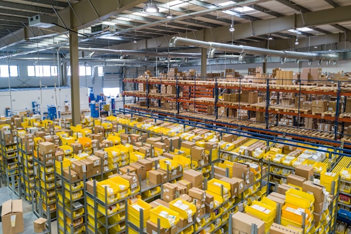

Meridian Analytics Platform
Real-time analytics dashboard for a logistics company, consolidating data from 12 warehouses into a single decision-making hub.

Apex Financial Portal
End-to-end digital transformation for a mid-size financial services firm, from legacy audit to a modern client-facing platform.

UrbanFlow Mobile App
A cross-platform transit app designed for daily commuters, featuring live updates, route planning, and accessibility-first design.

Greenline Cloud Migration
Migrated a national logistics provider from on-premise infrastructure to a multi-region AWS setup, reducing downtime by 94%.

Vantage Supply Chain
Serverless inventory management system built on GCP, handling 50K+ daily transactions for a retail chain with zero cold starts.

Pulse Health Tracker
Patient-facing wellness dashboard for a telehealth startup, integrating wearable data with physician-reviewed health insights.